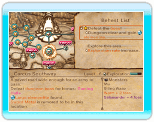

18 |
Pubblicare gli ordini |
 |
Ogni mattina puoi scrivere i tuoi "behest" (ordini) durante la fase dei resoconti giornalieri. Sappi che i tuoi ordini verranno affissi sulla bacheca del regno, all'attenzione degli avventurieri. Potrai affiggere tanti ordini quante sono le bacheche, quindi ricordati di costruirne altre in modo tale da poter impartire più ordini contemporaneamente.
Quando selezioni una bacheca, verrà visualizzata la schermata della mappa del mondo con il castello al suo centro. Sposta il cursore sul dungeon per poter leggere informazioni dettagliate sull'area, il tipo di ordini impartiti per il dungeon e i mostri che i tuoi avventurieri si troveranno ad affrontare. Sfrutta le notizie per scegliere gli avventurieri più adatti da inviare sul posto! Dopo aver raggiunto un determinato punto di sviluppo nel gioco, ti sarà possibile scegliere il castello stesso per impartire ordini come ad esempio i cambi di classe o la proclamazione dei giorni di festa nazionale. Gli avventurieri si accalcheranno alle bacheche dove vengono affissi gli ordini. Parla con loro per controllarne i parametri, e scegliere così quelli da inviare in ogni missione. Puoi anche decidere di inviare gli avventurieri che non hai scelto ad esplorare dungeon di testa loro, in modo tale da aumentarne il livello di esperienza. |


|
 |
 |
 |